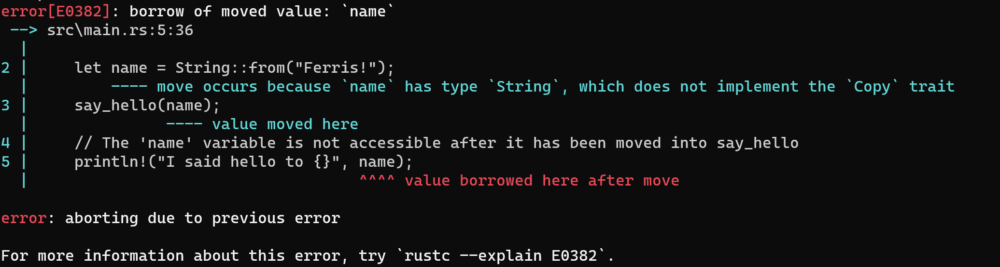

Pre-workshop instructions:
Pre-workshop instructions:https://kennep.github.io/milescamp-rust-workshop/README.html
Rust Workshop
Miles Camp 2021
Disclaimer
I am a Rust Noob
What is rust?
Rust is an open-source systems programming language that focuses on speed, memory safety and parallelism https://research.mozilla.org/rust/
Hello, Miles!
$ cargo run
Compiling hello-miles v0.1.0 (hello-miles)
Finished dev [unoptimized + debuginfo] target(s) in 1.23s
Running `target\debug\hello-miles.exe`
Hello, Miles Camp 2021!
Memory management approaches
- Manual memory management (C, C++)
- Garbage collection (Java, C#, Go)
- Resource counting (Python)
- Compiler-managed memory (Rust!)
Borrowing and the borrow checker
One of the most confusing things for new Rust developers!
This is the Rust language feature that lets the compiler know when to free memory
Passing a variable
Passing a variable to another function passes ownership of that variable to the function

Copy and Clone traits
- The Copy trait is implemented automatically by the compiler for primitive values and structures containing only primitives
- Strings do not implement Copy.
- Instead, strings and many other types implement the Clone trait
Types that implement Copy
Hello, HAL 9000!
I said hello to HAL 9000!
Using the Clone trait
Hello, Ferris!
I said hello to Ferris!
Passing a variable by reference
This lets a function "borrow" the value for a while
Variables and mutability
- Variables are immutable by default
- You can declare them as mutable by using
let mut
Hello, Ferris the crab!
Enums, Option and Result
Rust enums are what is called discriminated unions or algebraic datatypes in other languages
enum Option<T> {
Some(T),
None,
}
enum Result<T, E> {
Ok(T),
Err(E),
}
Match expressions
A whirlwind tour of the Rust ecosystem
Core sites and docs
Rocket
WebAssembly
Code your frontend in Rust and compile it to WebAssembly
Rust full-stack
Command-line apps: Some examples
Misc
Hackaton
Spend 10 minutes thinking about what you want to make
Feel free to discuss with your neighbour!
Hackaton
Tell us your idea!
Hackaton
Find your group!
Good luck!
Credits
First slide animated crab:
https://www.behance.net/gallery/42774743/Rustacean